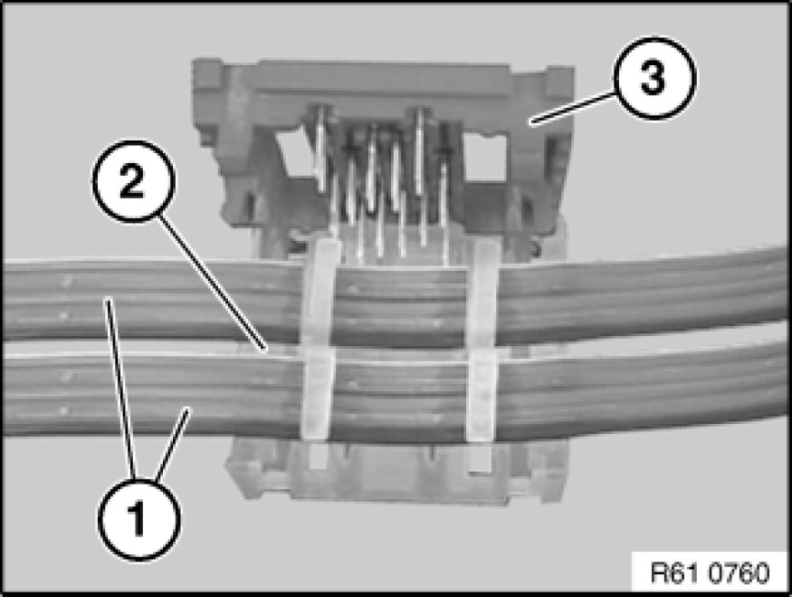
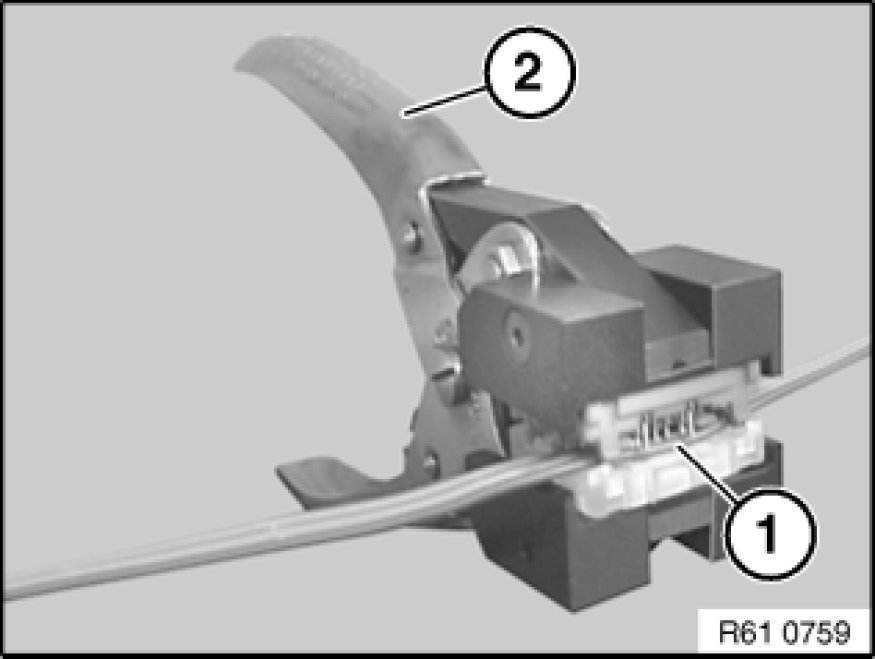

61 13 ... Repairing Ribbon Cables
61 13 ... - Repairing ribbon cables

Special tools required:
- 61 1 190 61 1 190 Pliers

Place ribbon cables (1) in connector housing (2) and close cover (3).

Place connector housing (1) in tool (2) 61 1 190 61 1 190 Pliers.
Close tool (2).